| みんなで作ったイカダを担いで移動中。 | 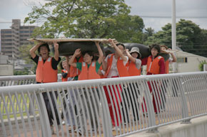 |
| 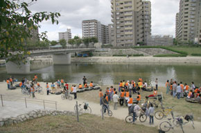 |
スタート地点。学祭に関わる総勢100人もの学生達が参加します。 |
| 手作りのイカダは形もさまざま。 | 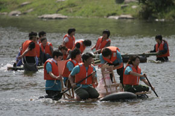 |
| 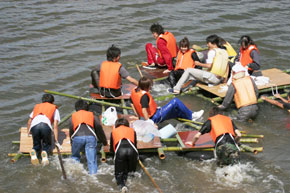 |
激しい攻防戦。学生たちの間では一位でのゴールを目指すのも醍醐味のひとつ。 |
| イカダに乗らない人も自転車で大移動。 | 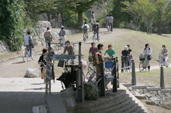 |
| 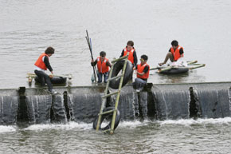 |
滝つぼにだって飛び込みます。 |
| 橋の上からの眺めはなかなか圧巻。 | 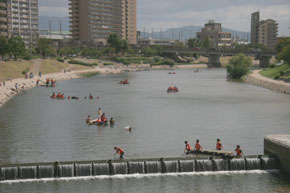 |
| 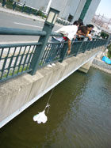 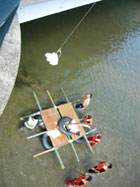 |
橋の上から差し入れを吊り下げます。 |
| 清掃活動も忘れずに。 | 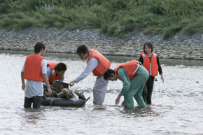 |
| 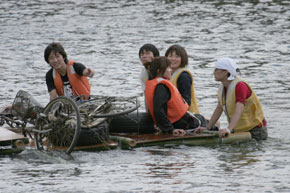 |
川に捨てられていた自転車も回収。 |
| 無事ゴール地点に到着！ | 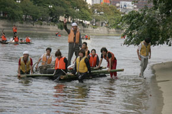 |
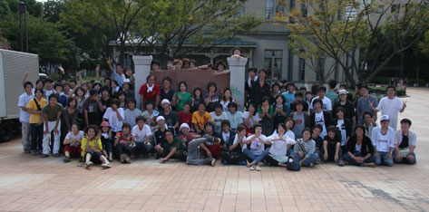 全員集合!! | |